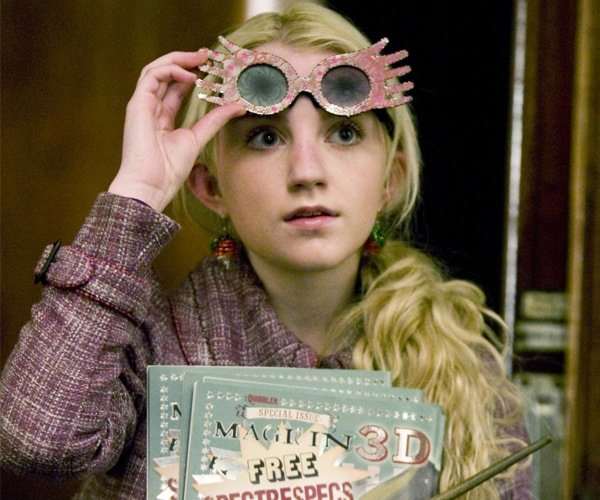
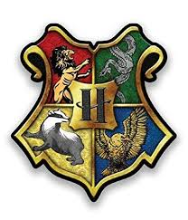
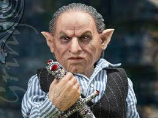

whoa is that the real wazzaazza
I mean just claiming you had a red on someone D2 was like
super obvious it was me
and I’m mildly sad about the fact that most likely all your games from now on will be played around my slot
which isn’t something i like
but that’s fair

I only focused on you because your d1 was scummy, so don’t be scummy
it was me
Old setup because pogchamp
Game Name: Harry Potter FM
Main Host: oB_L1ght
Game Size: 20 - 14 Town, 4 Scum, 2 Neutral (One True Neutral, One Scum-Biased Neutral)
Game Speed: Days: 24 hours. - Nights: 24 hours.
Game Type:
It’s a warm, breezy night. All of the sudden, a pop resounds through the air. 20 people all drop down to the ground, with one person floating above them. Gellert Grindelwald laughs as his greatest threats for his plan to conquer Magical Europe all groggily get off the ground. He erases their knowledge of each other’s faces, leaving them all clueless as to who the other people are.
The island is a circle, with one side covered by forest, and the other a grassy plain with 20 magically expanded tents surrounding a large campfire, giving off plenty of warmth. Gellert cackles as he Apparates away, intent on conquering Europe while his rivals were busy fighting each other.
General Mechanics
Questions will be answered in classcards unless they are being commonly asked and are not too specific.
There may or may not be anti-claim mechanics.
There may or may not be neutrals.
Flavor is AI and can be gamesolving. Relying on this will result in a ban from any future games I might host.
Actions are done by messaging in your classcard.
This game has a Day 1 Start.
There is a Day 1 Lynch.
Days are 48 hours unless majority is reached early, and nights are 24 hours.
In case of a tie in votes at the end of the day, the lynch will be determined randomly among the players receiving the most votes.
All votes must be in the form /vote [name of player] to be considered valid, and all unvotes must be in the form /unvote.
The Death Eaters have an optional factional kill each night. This factional kill must be assigned to a member during the night, and can be tracked, watched, or roleblocked.
The Death Eaters will communicate through a private Discord server or forum topic. This chat is active all the time.
Feedback will follow logic (lots of feedback).
Self-votes are considered valid votes.
No-lynch is a valid vote, and may be hammered to end the day early. In cases where no-lynch and another vote are tied at the end of the day, no-lynch will have priority in the rand except if the other vote has the “Hated” Modifier.
Votes are locked in MyLo and LyLo scenarios. That is to say, in situations where a mislynch or a no-lynch will guarantee a Mafia victory, the first vote cast by a given player is final and cannot be changed.
Win Conditions
The Students of Hogwarts have a simple goal: Defeat all of the Death Eaters, as well as any Neutrals who might wish you harm.
The Death Eaters also have a simple goal: Reach parity with the Hogwarts Students.
Rules
Follow the Global Forum Rules.
Classcards will be sent out as soon as possible after the game fills.
Phases will be 48/24.
Lynches will be Majority & Plurality
Players should post at least 20 on topic and game related times per day phase. If this cannot be met for a particular reason, the mod should be informed in your role PM.
Try not to sub out just because you’re getting scumread, or because you don’t like your flavor. I specifically designed this game so that everyone, regardless of your flavor, could still have fun and feel like you were participating.
Galleons - Currency
Each player starts with a set amount of Galleons, and will gain a randomly generated amount of Galleons from 2-6 each night. This will be random for each player.
In a case of a kill, the killer will obtain all of the killed player’s Galleons.
In case of a plurality lynch, the lynched player’s Galleons will be evenly distributed among players of the wagon, with favoritism being shown against the earlier voters on a wagon. Each player on the wagon will get no less than 1 Galleon.
In case of a majority lynch, the lynched player’s Galleons will be evenly distributed, and any excess that can not be distributed to the wagon will be given to the hammerer instead.
Harry Potter
Hogwarts StudentPassive: Part of the DA - You know how to defend yourself… somewhat.
Passive: Marked as His Equal - If you are attacked by a Death Eater, you will survive and Voldemort will lose a Horcrux. If you die in any way, Voldemort will lose a Horcrux (if he has any left).
Passive: The-Boy-Who-Lived - Survive your first killing blow. You will be informed when this proc’s.
Night: Expelliarmus - Summon another player’s wand out of their hand, causing them to not be able to complete any night actions. (3 Uses)
Night: Expecto Patronum - Cast a corporeal Patronus at a target. If your target is a Dementor, they will be repelled by the Patronus if it is their first time being hit by it, and will die if it is their second time being hit by it. They will be unable to use any night actions that night. If the target is not a Dementor, you will be unable to use any abilities the next day/night cycle. (2 Uses)
Night: Sectumsempra - It may have been Snape’s creation, but after seeing what it did to Malfoy, you decided to hang on to it. Your target will start to bleed and hemorrhage, and will die in two nights. (2 Uses)
Starting Galleons: 10
Win Condition: Defeat all of the Death Eaters, as well as any Neutrals who might wish you harm.
Hermione Granger
Hogwarts StudentPassive: Part of the DA - You know how to defend yourself… somewhat.
Passive: Faith in Authority - Any and all cop-checks on you will completely ignore any framing effects.
Day/Night: Smartest Witch of the Generation - You have a knack for figuring out things that nobody else can. Once per game, you may study a dead student’s body and replicate one of their abilities, gaining a one-shot use of said ability. (1 Use)
Night: Protego - Cast a barrier around one person, preventing anyone else from visiting them for that night. (2 Uses, 2-Night Cool-down in-between uses)
Night: Confundus - Cast a confusion charm at a target. If your target casts a spell tonight, their spell will go off in an unintended direction, either hitting a random target or missing entirely. (2 Uses, 2-Night Cool-down in-between uses)
Starting Galleons: 5
Win Condition: Defeat all of the Death Eaters, as well as any Neutrals who might wish you harm.

Ron Weasley
Hogwarts StudentPassive: Part of the DA - You know how to defend yourself… somewhat.
Passive: Chessmaster - You are always thinking three steps ahead on how to get out of a sticky situation. Your visits will not be seen by any of those who are not looking for you.
Passive: Family Discount - Fred and George give you 33% off items from Weasleys’ Wizard Wheezes (rounded up).
Night: Broomride - Restless, you hop on your broom and practice Quidditch all night. No actions directed towards you will succeed. The day afterward, you will be limited to 100 posts, not including votes. This may be raised or lowered depending on game activity. (1 Use)
Night: Snoop - Take a look around someone’s room. You have a 75% chance to learn who they visit that night, or a 25% to find out their alignment. (3 Uses)
Starting Galleons: 3
Win Condition: Defeat all of the Death Eaters, as well as any Neutrals who might wish you harm.
Susan Bones
Hogwarts StudentPassive: Part of the DA - You know how to defend yourself… somewhat.
Passive: Hufflepuff’s Loyalty - If a person you sent a Vanity Mirror message to is attacked that same night, you will duel the attacker to a stand-still, resulting in both of your deaths.
Day: Vanity Mirror - Once a day, send a single message to another player without giving away your name or role. That player will be able to send one message back. - Character Limit: 150 Characters (excluding spaces). You may not choose the same player more than once until three days have passed since you last chose them. (1 Use per Day)
Night: Amelia Bones’ Niece - You know how to defend yourself. If you are visited tonight, you will blast the visitor with a Confringo Curse, protecting yourself from any effects, positive or negative. (2 Uses, 2-Night Cool-down in-between Uses)
Starting Galleons: 8
Win Condition: Defeat all of the Death Eaters, as well as any Neutrals who might wish you harm.
Luna Lovegood

Hogwarts StudentPassive: Part of the DA - You know how to defend yourself… somewhat.
Day/Night: Nargles - You may request from the host a piece of mech info. You will either get mech-info based on your question, or, if your question is too vague or too specific, will instead get an indecipherable mess. (1 Use)
Night: Seer’s Blood - See who your target visits. (Infinite Uses, 2-Night Cool-Down in-between Uses)
Night: Concerned Friend - Look out for someone you’re worried about. See who visits your target. (Infinite Uses, 2-Night Cool-Down in-between Uses)
Starting Galleons: 2
Win Condition: Defeat all of the Death Eaters, as well as any Neutrals who might wish you harm.
Draco Malfoy
Hogwarts StudentPassive: Slytherin’s Cunning - You can lose anyone who is following you.
Passive: Prejudice - Alignment checks on you will show up as ‘Death Eater’.
Night: Base of Operations - You can try to eavesdrop on Death Eater conversations to find out their targets. However, there is a 1/10 chance to be discovered and killed. (3 Uses)
Night: Veritaserum - You snatched a vial of Veritaserum from Snape’s collection, but found it to be half-empty, with only one doses left. You may choose to do one of two options - First, you may use the whole dose on someone. You will learn their alignment. Otherwise, you may choose to split the dose between two people - you will learn if they are the same alignment or not. Choose carefully. (Technically 2 Uses, but you only get to do it once)
Starting Galleons: 10
Win Condition: Defeat all of the Death Eaters, as well as any Neutrals who might wish you harm.
Daphne Greengrass
Hogwarts StudentPassive: Pureblood Upbringing - You are cold, and rarely talk with others outside your social circle… You can not be targeted by abilities during the day.
Night: Protego Totalum - You hide your bedroom from lurking eyes. Anyone who attempts to visit you will wander to a different target instead. They will know they did not visit you. (2 Uses, 1-Night Cool-down)
Night: Expecto Patronum - Cast a corporeal Patronus at a target. If your target is a Dementor, they will be repelled by the Patronus if it is their first time being hit by it, and will die if it is their second time being hit by it. They will be unable to use any night actions that night. If the target is not a Dementor, you will be unable to use any abilities the next day/night cycle. (2 Uses)
Starting Galleons: 6
Win Condition: Defeat all of the Death Eaters, as well as any Neutrals who might wish you harm.
Cedric Diggory
Hogwarts StudentPassive: Honesty is in my Blood - Checks on you will always see you as a ‘Hogwarts Student.’
Day: Hogwarts’ Champion - You’re considered to be one of the best students in school, and your classmates look up to you. Any day after D2, you may out as Cedric Diggory, and your vote will count for two votes, but you will no longer be able to be protected or watched.
Night: Loyalty - You know if someone is loyal to their friends. Check someone to find out if they are loyal to Lord Voldemort. (2 Uses)
Night: Fair Play - It’s not victory if the scales are unbalanced. Link two players. What happens to one will happen to the other, and both will share a chat for the night without knowing why. You can select yourself. You cannot pair either of the two players again, exempting yourself. (3 Uses)
Starting Galleons: 6
Win Condition: Defeat all of the Death Eaters, as well as any Neutrals who might wish you harm.
Percy Weasley
Hogwarts StudentPassive: Secret Lovers - You share a Mason Chat with Penelope Clearwater. When/if one of you dies, the other one gets a 1-Shot Guiltless Vigilante.
Starting Galleons: 3
Win Condition: Defeat all of the Death Eaters, as well as any Neutrals who might wish you harm.

Ernie Macmillan
Hogwarts StudentPassive: Part of the DA - You know how to defend yourself… somewhat.
Night: Healthy Dose of Suspicion - You can’t shake this gut feeling that something might be wrong. Follow someone around for a night and see who they visit. (2 Uses)
Starting Galleons: 8
Win Condition: Defeat all of the Death Eaters, as well as any Neutrals who might wish you harm.
Penelope Clearwater
Hogwarts StudentPassive: Secret Lovers - You share a Mason Chat with Percy Weasley. When/if one of you dies, the other one gets a 1-Shot Guiltless Vigilante.
Starting Galleons: 4
Win Condition: Defeat all of the Death Eaters, as well as any Neutrals who might wish you harm.
Pansy Parkinson
Hogwarts StudentNight: Picking Sides - You have chosen to help the other Students of Hogwarts. Pick someone to shoot a powerful lethal spell at. If they turn out to be another Student, you will commit suicide the same night. (2 Uses)
Starting Galleons: 6
Win Condition: Defeat all of the Death Eaters, as well as any Neutrals who might wish you harm.
Head-Boy

Hogwarts StudentDay: Head-Boy - For one day, your vote counts as double. Nobody else will see that you have the power of two votes. (1 Use)
Night: Detention - Put one player in detention for a night. Any night activities from this target will not go through. (1 Use)
Starting Galleons: 5
Win Condition: Defeat all of the Death Eaters, as well as any Neutrals who might wish you harm.
Head-Girl
Hogwarts StudentDay: Head-Girl - For one day, your vote counts as double. Nobody else will see that you have the power of two votes. (1 Use)
Night: Detention - Put one player in detention for a night. Any night activities from this target will not go through. (1 Use)
Starting Galleons: 5
Win Condition: Defeat all of the Death Eaters, as well as any Neutrals who might wish you harm.
Voldemort
Death EaterPassive: Unemotional - You can not understand the concept of love, and Lily’s sacrifice has no meaning to you. You lose a Horcrux if you visit Harry Potter.
Passive: Uncaring - Every three day/night cycles, you will lose a Horcrux, unless you are at 0 Horcruxes.
Passive: Horcruxes - You are immune to all forms of death other than an execution. If you are attacked, however, you will lose a Horcrux. If you have no Horcruxes left, you will die.
0 Horcruxes Remaining - Passive: I Will Live On! - If you die, you will still be able to talk to your living followers. You will not be invited to the Dead Chat. This ability will not be displayed when you flip.
1 Horcrux Remaining - Passive: Disillusioned - Alignment checks on you will show up as “Hogwarts Student”.
2 Horcruxes Remaining - Passive: Split Souls - The Dementor’s Kiss will not kill you, but will force you to sacrifice a Horcrux to save your life. (-1 Horcrux)
3 Horcruxes Remaining - Day: Sic ‘em! - Send Nagini to kill another player at the cost of your precious snake’s life. You lose one Horcrux. (1 Use, -1 Horcrux)
4 Horcruxes Remaining - Night: Crucio - Use the Cruciatus Curse on another player. If you use this on the same player 3 times, they will go insane and die. They will know they are being Crucio’d. (Infinite Uses)
5 Horcruxes Remaining - Passive: Notice-Me-Not - Your actions are untraceable.
6 Horcruxes Remaining - Night: Unbridled Rage - You will kill one player. You hold no care for the safety of your followers, however. You have a 75% chance of killing a Hogwarts Student, and a 25% chance of killing a Death Eater. This can be used on top of the factional kill. (3 Uses)
7 Horcruxes Remaining - Night: Avada Kedavra - You may expend lots of magical energy to choose a player to kill. This will replace the factional kill for this night, but will go through any and all protections, unless the target is Harry Potter. (2 Uses, 1-Night Cool-down in-between Uses)
These numbers are the Horcrux Requirement. This means that you may, for example, use Crucio even if you have 7 Horcruxes, and will always have “I Will Live On!”
Starting Galleons: 0
Your ideals must be superior at any cost. Reach parity with the Hogwarts Students to win.

Lucius Malfoy
Death EaterPassive: Friends in High Places - Your connections to the Minister for Magic are not to be underestimated. You require one more vote to be executed, and will always win (not be chosen) in ties.
Passive: Devoted to the Cause - If Voldemort dies before you, you will gain a one-shot use of the Entrail-Expelling Curse, which will bypass all protections.
Night: Friends in Low Places - You have access to the Borgin and Burkes shop. You may choose to buy one item that would otherwise appear randomly in Weasleys’ Wizard Wheezes at double the price. If you are followed, however, you will be outed as a Death Eater. (1 Use)
Night: Imperio - You may cast the Unforgivable Curse on another player (that is not a Death Eater). You will learn their role, and will have one randomly chosen ability used on a randomly chosen player. You may not ignore cool-downs or usage limits. You will be told the spell name, and the player it was used on, but will not know its exact effects. (2 Uses, 2-Night Cool-down in-between Uses)
Starting Galleons: 30
Your ideals must be superior at any cost. Reach parity with the Hogwarts Students to win.

Peter Pettigrew
Death EaterPassive: Animagus - You have a 25% chance of escaping detection. Every time you are investigated, rng will determine if you show up as a “Hogwarts Student” or “Death Eater” to alignment checks.
Passive: Unproven - If you do the factional kill and your target does not die, Voldemort will kill you for failing your task. If Voldemort is dead, you will not be killed.
Passive: Rat - Your visits will not be seen by those who are not looking for you.
Night: Small and Quiet - You may sneak around and find out what someone is up to. You have a 12.5% chance of being caught and killed. (Infinite Uses)
Starting Galleons: 2
Your ideals must be superior at any cost. Reach parity with the Hogwarts Students to win.
Bellatrix Lestrange
Death EaterPassive: Questionable Sanity - Your actions have a 20% chance to hit the wrong target, but these misfires will always go through protections, and be untraceable.
Passive: Devoted to the Cause - If Voldemort dies before you, you will gain a one-shot of Fiendfyre, which will kill your target, bypass protections, and kill anybody else who visited the target that night. You have a 20% chance to also perish in the flames.
Day: Taunt - Anonymously provoke another player, giving them the “Hated” Modifier until you die, at which point they will instead gain the “Loved” Modifier for two days. (Use in classcard) (2 Uses)
Night: Skilled Duelist - You may choose a target to duel. You have a 40% chance to kill them, and a 20% chance to be killed yourself. Both may happen in the same fight. (3 Uses)
Night: Oh, Would You Just Shut Up! - If someone claims their role or flavor, you may shoot them. This bypasses all healing or blocking abilities or natural defense. (2 Uses)
Starting Galleons: 0
Your ideals must be superior at any cost. Reach parity with the Hogwarts Students to win.
Dementor
NeutralPassive: Not Quite Living, Not Quite Dead - You are immune to all spells except for Expecto Patronum.
Passive: Know Thyself - A whisper of a fleeting wind tells you how many DA members are remaining alive every odd night (including N1).
Night: Dementor’s Kiss - You feed off of happy thoughts and emotions. If you visit a Hogwarts Student who is a part of the DA, they will drive you off. If you visit a Hogwarts Student who is not a part of the DA, you will kill them. If you visit a Death Eater, their negative thoughts and emotions will kill you instead. (2 Uses)
Night: Chilling Presence - You may choose a player to visit. That player, and anyone who visits that player, will start to have the coldness seep into their bones. They will know this has happened. They have a total of 2 nights (not including the night of) to eat a piece of Chocolate, or they will die. If your target is a Death Eater, they will have only 1 night to eat a piece of Chocolate (not including the night of). (Infinite Uses)
Starting Galleons: 0
Win Condition - Successfully administer the Dementor’s Kiss to a student, or make it to the Final 5. If you win, you have your choice to either leave the game, or stay in without abilities. You lose if the Death Eaters win before you do.

Griphook

NeutralPassive: Eyes on the Prize - You will always know who has the Sword of Gryffindor if it is bought.
Passive: Goblin Magic - You are night-immune. You may still be killed during the day, executed, or killed by other means that are not direct effects.
Day/Night: Investment - Choose a player, and place a bet. If they survive the next three day/night cycles, you will have a chance to gain money proportional to how much you bet multiplied by a RNG-determined amount between 2 and 4. (1 Use)
Day/Night: Desperation - If there are less than 8 people left and you do not have the Sword, and another player does, you may make them an offer - 150 Galleons, and to join their team, in exchange for the Sword of Gryffindor. You will not actually join their team, but instead be exited from the game with a win. (Requires 150 Galleons).
Night: Auctioneer - Every night, you get a random item, which you can then offer to three players of your choice. These four players will not be able to see your role, nor will you be able to see theirs. These players will be able to bid on this item, and will be informed if they were outbid. The final bid will go to your pocket. You may not choose the same player two nights in a row. (Infinite Uses)
Starting Galleons: 0
Win Condition - Gain enough gold to purchase the Sword of Gryffindor. (And do so… duh)
Weasley’s Wizard Wheezes: Every Night Phase starting N1, Weasley’s Wizard Wheezes stocks up two items, available for purchase in your classcard. This is held in an auction-style, anonymously. Everyone will see the same items for purchase. You can only bid on one item at a time. Auctions will last for the entire night/day phase.
Items available:
Chocolate - 1/6 Chance - Allows you to use up to 2 abilities tonight. - Starting Price: 10 Galleons
Flickering Flashlight - 1/6 Chance - 50% Chance to see who visits you tonight. - Starting Price: 8 Galleons.
Sword of Gryffindor - 1/12 Chance - Increases odds of any positive RNG applying to you (Gold, Abilities, Events, etc.) - Starting Price: 100 Galleons.
Invisibility Cloak - 1/8 Chance - For the next two nights, your actions will not count as visits. - Starting Price: 40 Galleons.
Pepper-Up Potion - 1/6 Chance - Grants you +1 use of an ability that you have already used. Can not go above the original amount of Uses. - Starting Price: 25 Galleons.
Smooth Stone - 1/8 Chance - A smooth stone found on the beach. Fred painted a skull and bones on it. Doesn’t seem too useful. - Starting Price: 15 Galleons.
Illegal Paraphernalia - 1/12 Chance - Frame a target. They will appear as a Death Eater to any investigative checks, with a 33% chance to discover the items and destroy them every night. - Starting Price: 10 Galleons.
Fireworks - 1/12 Chance - Set off fireworks in front of your house. Nobody will be able to visit you tonight. - Starting Price: 12 Galleons.
If a player dies while holding the Sword of Gryffindor, Invisibility Cloak, or the Smooth Stone, the item will be dropped and placed back into the shop rotation. There can only be one of these items at a time.
Events:
Night: Hooded Man (I) - A hooded man walks up to you and offers you a strange artifact. He tells you that it is a Horcrux, and he needs you to keep it safe for one night. If you keep it safe for him, he will reward you handsomely.
Options:
Try to destroy the Horcrux, with a 25% success chance. If you fail, you will damage the Horcrux and will not get the reward.
Keep the Horcrux safe, and get the reward the next night.
If A and Fail
Night: Hooded Man(II) - A hooded man walks up to you and offers you a strange, slightly damaged artifact. He tells you that it is a Horcrux, and he needs you to keep it safe for one night. If you keep it safe for him, he will reward you handsomely.
Options:
Try to destroy the Horcrux with a 50% success chance. If you fail, you will damage the Horcrux and will not get the reward.
Keep the Horcrux safe, and get the reward the next night.
If A and Fail
Night: Hooded Man(III) - A hooded man walks up to you and offers you a strange, heavily damaged artifact. He tells you that it is a Horcrux, and he needs you to keep it safe for one night. If you keep it safe for him, he will reward you handsomely.
Options:
Destroy the Horcrux.
Keep the Horcrux safe, and get the reward the next night.
If this Horcrux is destroyed, Voldemort’s Horcrux Counter goes down by 1.
Night: Insomnia - You are feeling restless.
Options:
You may decide to go on a walk, where you have a 50% chance to find a piece of Chocolate, and will 100% of the time be limited to 150 posts excluding votes the next day.
Stay in bed and eventually fall asleep.
Day: Dueling Class - Dueling Class has started back up at Hogwarts! A tournament will be held at (X) time. It costs 3 Galleons to enter, and will be entirely anonymous. RNG will decide the victors and losers of matches. The first place winner will get 9 Galleons, second place will get 7 Galleons, and third place will get 5 Galleons. Register in classcards!
Night: Suspicious Trophy - A suspicious trophy waits outside your bedroom when you head to sleep. A whisper in your mind tells you that it might be a trap.
Options:
Take the trophy.
Leave the trophy
If A
50% chance for the trophy to stun you and leave you unable to participate in any night activities.
25% chance for it to have 3 galleons inside of it.
25% for it to do nothing.
Day: Leprechaun - A happy Leprechaun bounds into the game. He wants to give every player 3 Galleons. If you sacrifice a Galleon, you have a 4% chance to lure him into a trap, where you now get 20 Galleons, but nobody else gets any Galleons. If the Leprechaun remains untrapped at EoD, everyone gets 3 Galleons. The Leprechaun can only be trapped once before he gets angry and disappears. If more than 8 attempts are made on the Leprechaun, he will instead take 6 Galleons from every player if he is not trapped by EoD.
Day: The Quidditch World Cup! - You may buy tickets to the Quidditch World Cup. A ticket costs 5 Galleons. You may or may not get a chance to talk to someone else while you’re there. Unfortunately, the game ends just before the end of the day.
33% Chance to get into a temporary chat with another player (Until 1 hour before EoD). You will know their name, but not their role or alignment.
Night: Group Effort - A Horcrux has appeared! You may sacrifice your ability to use a night action for the night and fight it, instead.
If >12 people remaining:
If 1 Fighter - 20% Chance of Killing the Horcrux.
If 2-4 Fighters - 33% Chance of Killing the Horcrux.
If 5-7 Fighters - 67% Chance of Killing the Horcrux.
If 8-9 Fighters - 80% Chance of Killing the Horcrux.
If 10+ Fighters - 100% Chance of Killing the Horcrux.
If <13 people remaining:
If 1 Fighter - 25% Chance of Killing the Horcrux.
If 2-4 Fighters - 40% Chance of Killing the Horcrux.
If 5 FIghters - 60% Chance of Killing the Horcrux.
If 6-7 Fighters - 80% Chance of Killing the Horcrux.
If 8+ Fighters - 100% Chance of Killing the Horcrux.
Day: It’s Snowing! - Snow drops from the skies, leaving faint trails on the ground. Once you get back inside, a steaming cup of Hot Cocoa is laying on the table. It can be drunk to allow you to use up to 2 night abilities for the next 2 nights. Next to the cup is a golden bowl with the inscription, “He who wants it most gets it!”
You may place coins in the bowl. Your chance of getting the Hot Cocoa is your coins/total coins.
Day: A House Elf appears in front of you. He wants you to go with him.
Options:
Accept
Refuse
If A
50% Chance to go to the kitchens and obtain a piece of chocolate.
50% Chance to go to the Forbidden Forest and be unable to perform any day/night abilities. You may still be visited.
Day: Secret Admirer - You wake up to find a goodie bag in your room from a secret admirer.
Options:
Leave the goodie bag where it is.
Open up the goodie bag.
If A
33% Chance to gain the “Hated” Modifier for the entire day.
If B
33% (independent) Chance to gain the “Loved” Modifier for the entire day.
25% Chance to find a Chocolate Frog. Will both allow you to use up to 2 abilities tonight and also show you a single ability of a random player and gain a one-shot of it.
12.5% Chance to find a love letter - creates a lover’s mason.
62.5% Chance to find nothing of importance.
Day: Butterbeer! - A butterbeer vendor has strolled into the game, offering bottles of Butterbeer for 5 Galleons apiece! He has 12 bottles, and one is spiked with Felix Felicis!
If you get the Felix Felicis, your RNG events will always have the best outcomes possible for the rest of the day and night, and one of your abilities will be modified to bypass protections, frames, or will be otherwise upgraded at the host’s discretion. You will not know if you drank the lucky bottle until the night comes.
Night: Shared Discovery - Two players embark on a journey together in the night, going for a stroll around the castle. In doing so, they find a tiny crate filled with 2 goodies - An ‘Unregistered Wand’ - grants you a one-shot use of Incarcerous - Tie up your target, and learn their role and abilities, and a ‘Lantern’ - Allows you safe passage through the halls at night, making you immune to night attacks for one night.
Each player will know the name of the other player they are traveling with.
Options:
Share
Take
If both players choose to share, they will both get one of the two items, decided randomly.
If one player decides to share and the other decides to take, the person who decided to take will get both items.
If both players decide to take, they will fight over the items, breaking it.
These two players will be unable to talk to each other unless they are in a chat together already, they will only know the other player’s decision.
Day/Night: Rogue Horcrux! - A rogue Horcrux has appeared! One of Voldemort’s Horcruxes is inhabiting Living Armor. You can choose to face off against it, if you’d like. You have a 12.5% chance to kill it, but it has a 12.5% chance to kill you.
Day/Night: Swirling Darkness! - Piles of ashes and dust culminate in the form of a monster, powered by one of Voldemort’s Horcruxes. You can choose to face off against it if you have a magical spell. You will use one use of the spell, and will have a 67% chance to kill the monster and destroy the Horcrux.
Night: The Strangest Dream - A vision appears to you as you sleep, giving you a riddle.
If the player answers the riddle correctly, they will wake up with the ‘Elder Wand‘ by their side. The Elder Wand makes any spells cast go through blocks or protections.
If the player is killed, the Elder Wand goes to their killer. If they are lynched, the wand goes to the FIRST player on their wagon.
Deathly Hallows
The Smooth Stone, Invisibility Cloak, and the Elder Wand are the three Deathly Hallows. If a player obtains all three Deathly Hallows, they will gain basic night immunity, the effects of the Invisibility Cloak will become permanent, and the Smooth Stone can now be used to communicate with a specific dead person.
was it actually
you would’ve immediately known if it was from the pure cringe alone
Banana
1 Like
Banana
1 Like
Banana
1 Like
Banana
1 Like
If I was just alive for another day we would have won with my big brain play
who was it 0_0
controversial take
if the game has advertised anticlaim you might be better off not immediately claiming VT

Still no clue, the guys on an alt so I can’t figure it out lol
Banana
I don’t ever play this game around a single player, but when someone is scummy I take notice and focus on them to solve said alignment
loltown
PR/PR wagons d1
loltown
track n1 nk
doesnt ever kill him